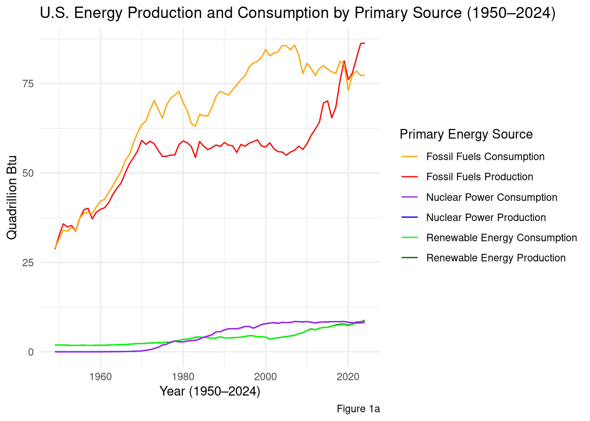
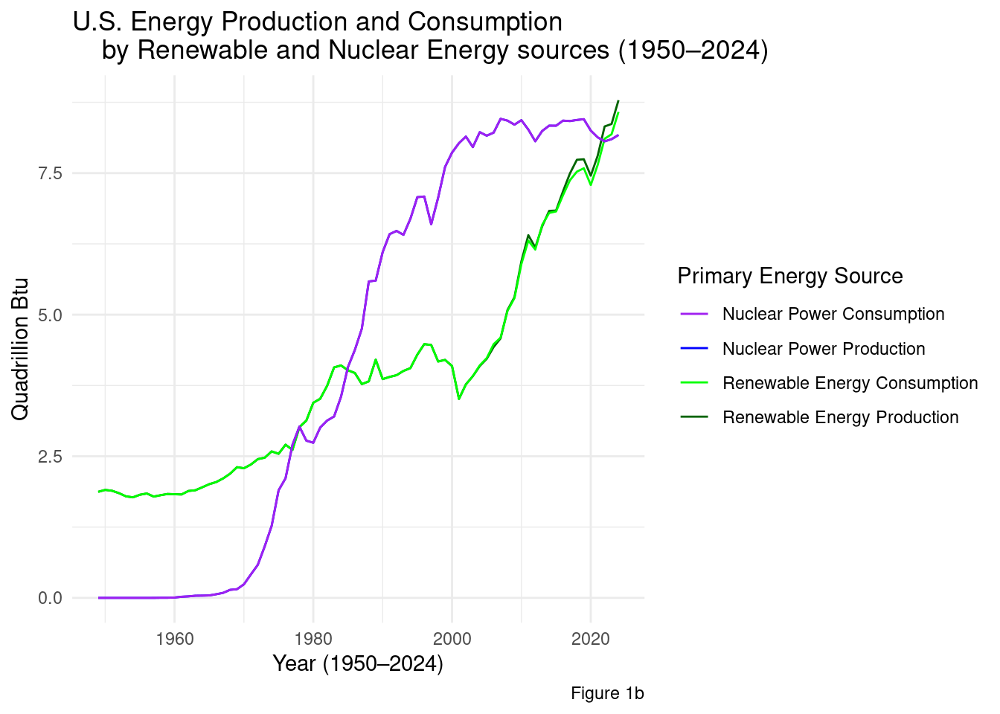

U.S. Energy Trends and Environmental Impact: Production and Consumption of Fossil Fuels, Renewables, and Nuclear Power (1950–2024)
data_science
sample_projects
energy
Author
Aaron Jimenez Gomez
Published
August 6, 2025
This portfolio analyzes trends in total energy production and consumption in the United States from 1950 to 2024, focusing on primary sources (fossil fuels, renewable energy, and nuclear power). As well as more specific energy source and their associated CO2 emissions. By following long-term patterns, this work aims to provide insights into the evolving U.S. energy landscape and its environmental impact.
Introduction:
Questions:
How have dominant primary energy sources shifted in terms of production and consumption from 1950 to 2024?
How have the most consumed and produced specific energy sources changed from 1950 to 2024? How do these trends relate to changes in CO2 emissions?
Predictions:
I believe from 1950 to 2024, there will be a substantial increase in the production and consumption of renewable and nuclear electric energy, while fossil fuel use will show a relative decline in both production and consumption, particularly in recent decades.
I expect that CO2 emissions in the United States will rise significantly from 1973 to the 2010s, followed by a decline from “cleaner” energy sources.
Where does it come from? How is data collected? What is collected?
Data set comes from the U.S. Energy Information Administration under the U.S. Department of Energy.
They are independent and nonpartisan ensuring reliability in their finding and methods
Comprehensive monthly and annual time series on all energy sources. Data on production, consumption, reserves, stocks, prices, imports, and exports. Monthly time series extend back to 1973 and annual time series extend back to 1949. National-level data on major end-use sectors ,i.e., residential, commercial, industrial, and transportation.
What will be utilized for this study?
Annual data from 1950 to 2024
Variables:
Energy production and consumption, measured in British thermal units (Btu)
Data grouped by primary energy source:
Fossil fuels
Renewable energy
Nuclear electric power
Individual energy sources within each primary source(coal, natural gas, solar)
── Attaching core tidyverse packages ──────────────────────── tidyverse 2.0.0 ──
✔ dplyr 1.1.4 ✔ readr 2.1.5
✔ forcats 1.0.0 ✔ stringr 1.5.1
✔ ggplot2 3.5.2 ✔ tibble 3.3.0
✔ lubridate 1.9.4 ✔ tidyr 1.3.1
✔ purrr 1.1.0
── Conflicts ────────────────────────────────────────── tidyverse_conflicts() ──
✖ dplyr::filter() masks stats::filter()
✖ dplyr::lag() masks stats::lag()
ℹ Use the conflicted package (<http://conflicted.r-lib.org/>) to force all conflicts to become errors
library(ggplot2)library(dplyr)
Approach/Predictions:
By comparing the production and consumption across different primary sources of energy we will be able to see trends from 1950 to 2024 and how it has evolved. Hoping to see that the production and consumption of renewable and nuclear electric energy will significantly increase over time, while fossil fuels use will decline.
By comparing the production and consumption across individual energy sources from 1973-2024, we can observe how each source has changed and contributes to its CO2 emissions.
Results:
Code:
Question 1: How have dominant primary energy sources shifted in terms of production and consumption from 1950 to 2024?
Utilizing Table 1.01 to give us a large annual overview of the production/consumption of Fossil Fuels, Renewable Energy, and Nuclear Electric Energy.
Cleanup
#dataset containing filtered year and con/prod#energy_primary <- read_excel("data/energy_primary.xlsx", # sheet = "Annual Data", range = "A9:M87")#--------------------------------------------------------------load("/cloud/project/posts/my_first_post/energy_primary.RData")updated_energy_pri_pop <- energy_primary |>select(`Annual Total`,`Total Fossil Fuels Consumption`,`Total Renewable Energy Production`,`Total Fossil Fuels Production`,`Total Renewable Energy Consumption`,`Nuclear Electric Power Production`,`Nuclear Electric Power Consumption`)
Figures:
# Total Primary (Renewable Energy and and N)ggplot(updated_energy_pri_pop, aes(x =`Annual Total`)) +geom_line(aes(y =`Total Fossil Fuels Production`, color ="Fossil Fuels Production")) +geom_line(aes(y =`Total Fossil Fuels Consumption`, color ="Fossil Fuels Consumption")) +geom_line(aes(y =`Total Renewable Energy Production`, color ="Renewable Energy Production")) +geom_line(aes(y =`Total Renewable Energy Consumption`, color ="Renewable Energy Consumption")) +geom_line(aes(y =`Nuclear Electric Power Production`, color ="Nuclear Power Production")) +geom_line(aes(y =`Nuclear Electric Power Consumption`, color ="Nuclear Power Consumption")) +scale_color_manual(name ="Primary Energy Source",values =c("Fossil Fuels Production"="red","Fossil Fuels Consumption"="orange","Renewable Energy Production"="darkgreen","Renewable Energy Consumption"="green","Nuclear Power Production"="blue","Nuclear Power Consumption"="purple" ) ) +labs(x ="Year (1950–2024)",y ="Quadrillion Btu",title ="U.S. Energy Production and Consumption by Primary Source (1950–2024)",caption ="Figure 1a" ) +theme_minimal()

#Total Primary (R and N)ggplot(updated_energy_pri_pop, aes(x =`Annual Total`)) +geom_line(aes(y =`Total Renewable Energy Production`, color ="Renewable Energy Production")) +geom_line(aes(y =`Total Renewable Energy Consumption`, color ="Renewable Energy Consumption")) +geom_line(aes(y =`Nuclear Electric Power Production`, color ="Nuclear Power Production")) +geom_line(aes(y =`Nuclear Electric Power Consumption`, color ="Nuclear Power Consumption")) +scale_color_manual(name ="Primary Energy Source",values =c("Renewable Energy Production"="darkgreen","Renewable Energy Consumption"="green","Nuclear Power Production"="blue","Nuclear Power Consumption"="purple" ) ) +labs(x ="Year (1950–2024)",y ="Quadrillion Btu",title ="U.S. Energy Production and Consumption by Renewable and Nuclear Energy sources (1950–2024)",caption ="Figure 1b" ) +theme_minimal()

Conclusion:
Fossil Fuel has been the most consumed and produced primary source of energy.
Question 2: How have the most consumed and produced specific energy sources changed from 1950 to 2024? How do these trends relate to changes in CO2 emissions from 1973 to 2024?
Cleanup:
Figures:
Conclusion:
Discussion:
Question 1: How have dominant primary energy sources shifted in terms of production and consumption from 1950 to 2024?
Prediction:
I believe from 1950 to 2024, there will be a substantial increase in the production and consumption of renewable and nuclear electric energy, while fossil fuel use will show a relative decline in both production and consumption, particularly in recent decades.
Results:
Hypothesis was partially supported.
Based on the results, the increase in production and consumption of renewable and nuclear electric energy was not as substantial as I had originally expected. Although both have grown over time, fossil fuels still have a substantial production and consumption. However, there was a decline in consumption of fossil fuels in recent decades, showing that there is a shift towards cleaner energy sources.
Question 2: How have the most consumed and produced specific energy sources changed from 1950 to 2024? How do these trends relate to changes in CO2 emissions from 1973 to 2024?
Prediction:
I expect that CO2 emissions in the United States will rise significantly from 1973 to the 2010s, followed by a decline from “cleaner” energy sources.
Results:
Hypothesis was _ supported.
Based on the results, the increase in production and consumption of renewable and nuclear electric energy was not as substantial as I had originally expected. Although both have grown over time, fossil fuels still have a substantial production and consumption. However, there was a decline in consumption of fossil fuels in recent decades, showing that there is a shift towards cleaner energy sources.